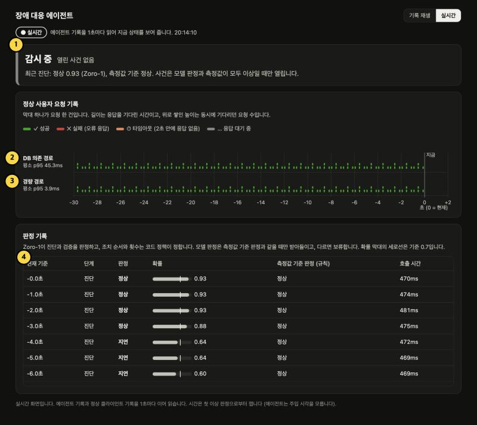
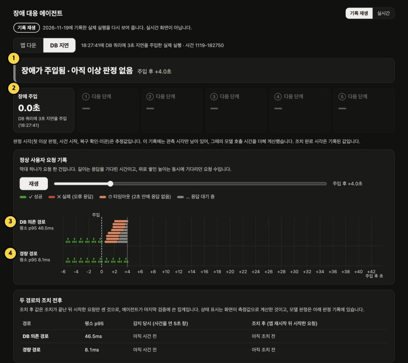
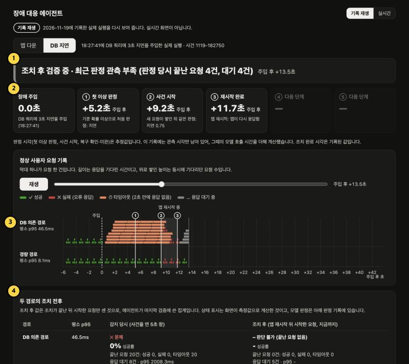
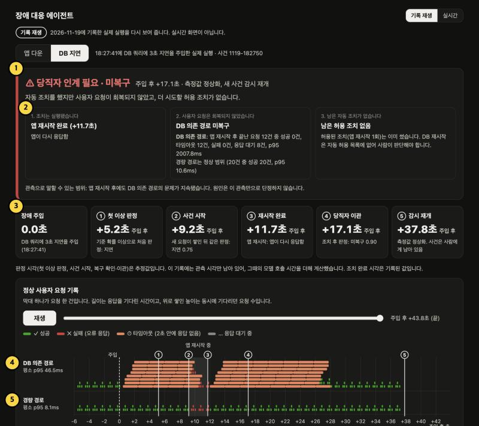
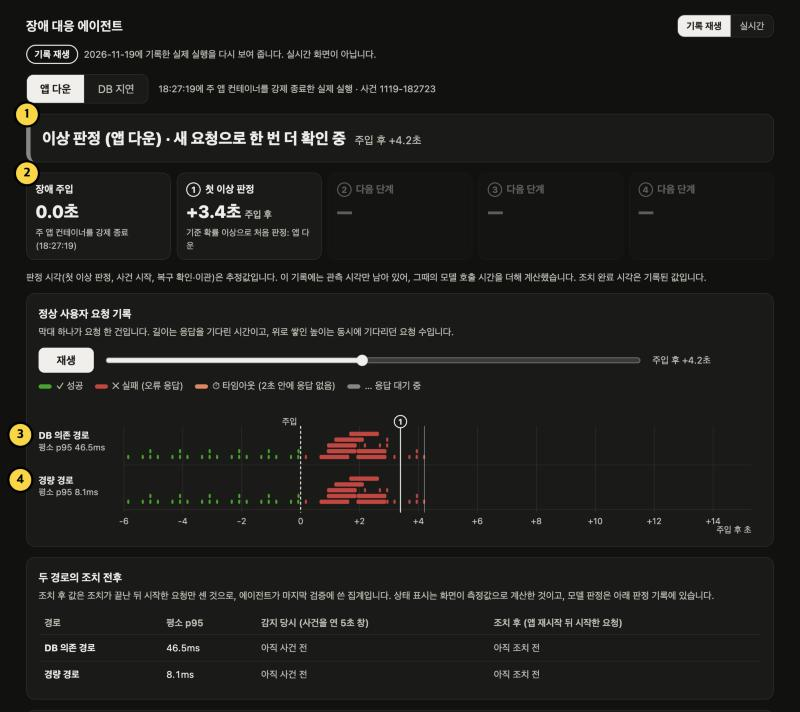
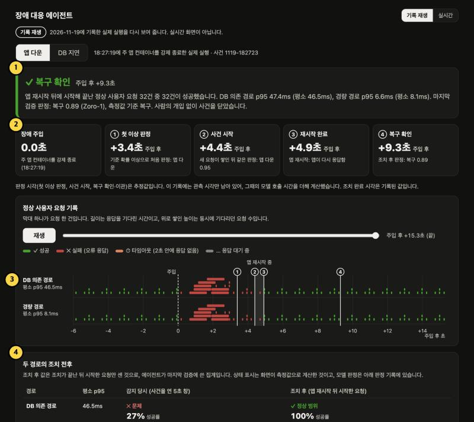

화면 읽는 법
실제 화면을 상황별로 찍고, 노란 번호가 붙은 곳을 차례로 설명합니다. 화면은 기록 재생과 실시간 두 가지인데 읽는 법은 같습니다. 그림을 누르면 크게 볼 수 있습니다.
먼저: 그래프의 막대
가짜 사용자 4명이 서비스를 계속 호출합니다. 막대 하나가 요청 한 건입니다.
| 초록 | 성공 |
| 빨강 | 실패 (오류 응답) |
| 주황 | 타임아웃 (2초 기다려도 답이 없어 포기) |
| 회색 | 아직 답을 기다리는 중 |
막대가 길수록 오래 기다린 것이고, 위로 높이 쌓일수록 동시에 기다리는 요청이 많은 것입니다. 윗줄은 DB를 쓰는 요청, 아랫줄은 DB를 안 쓰는 가벼운 요청입니다.
1. 평소
실시간 화면, 아무 장애도 없을 때

- 1결론 카드가 "감시 중, 열린 사건 없음"입니다. 문제가 없다는 뜻입니다.
- 2DB를 쓰는 요청 줄입니다. 짧은 초록 점이 나란히 찍힙니다. 요청이 전부 빨리 성공하고 있습니다.
- 3가벼운 요청 줄도 같습니다.
- 4에이전트가 1초마다 내린 판정입니다. 아래쪽 세 줄에서 모델은 "지연"이라고 했지만 확률이 기준 0.7(막대의 세로선)에 못 미치고, 오른쪽의 측정값 기준 판정은 "정상"입니다. 이럴 때는 아무 일도 일어나지 않습니다. 모델과 측정값이 둘 다 이상이라고 해야 사건이 열립니다.
2. DB 지연: 문제가 막 시작됨
DB 지연을 넣고 4초 뒤

- 1"장애가 주입됨, 아직 이상 판정 없음". 문제는 시작됐지만 에이전트는 아직 알아채지 못했습니다.
- 2단계 카드는 "장애 주입"만 켜져 있고 나머지는 아직 일어나지 않았습니다.
- 3윗줄에서 점선(주입한 순간) 오른쪽으로 주황과 회색 막대가 쌓이기 시작합니다. DB를 쓰는 요청이 답을 못 받고 줄을 서고 있습니다.
- 4아랫줄은 초록 그대로입니다. DB를 안 쓰는 요청은 멀쩡합니다. 그래서 "앱 전체가 아니라 DB 쪽만 아프다"는 것을 알 수 있습니다.
3. DB 지연: 재시작하고 나았는지 확인하는 중
주입 13.5초 뒤

- 1"조치 후 검증 중, 관측 부족". 앱을 재시작했고 나았는지 보는 중인데, 재시작 뒤에 끝난 요청이 아직 적어서 판단을 미루고 있습니다.
- 2①첫 이상 판정(5.2초) → ②사건 시작(9.2초) → ③재시작 완료(11.7초)까지 왔습니다. ①과 ②가 따로인 이유는 한 번 이상해 보인다고 바로 움직이지 않고, 새 요청이 쌓인 뒤 한 번 더 확인하기 때문입니다.
- 3그래프의 번호 붙은 세로선이 그 순간들입니다. 어두운 띠는 재시작하는 동안입니다. 띠 오른쪽에 회색 막대가 다시 쌓이기 시작합니다. 재시작했는데도 요청이 여전히 답을 못 받고 있다는 조짐입니다.
- 4표의 "조치 후" 칸은 아직 "판단 불가(끝난 요청 없음)"입니다. 결과가 나올 때까지 기다립니다.
4. DB 지연: 안 나았으니 사람에게 넘김
주입 17.1초 뒤에 이관. 화면은 그 뒤까지 포함

- 1빨간 카드 "당직자 인계 필요, 미복구". 자동으로 할 수 있는 건 했지만 안 나았다는 결론입니다.
- 2이유 세 칸입니다. 재시작은 실행됐다. 그래도 DB를 쓰는 요청은 12건 모두 타임아웃이고 가벼운 요청은 정상이다. 더 시도할 허용 조치가 없다(DB 재시작은 사람이 판단할 일이라 자동으로 하지 않습니다).
- 3④당직자 이관이 17.1초입니다. ⑤감시 재개는 테스트에서 장애를 되돌린 뒤 측정값이 정상으로 돌아와, 에이전트가 새 사건을 다시 받기 시작한 때입니다.
- 4이 화면에서 가장 중요한 부분입니다. 어두운 띠(재시작) 뒤에도 윗줄의 주황 막대가 그대로 쌓여 있습니다. 재시작으로는 안 고쳐졌습니다. 오른쪽 끝에서 초록으로 돌아오는 것은 테스트에서 장애를 되돌렸기 때문입니다.
- 5아랫줄은 처음부터 끝까지 초록입니다.
5. 앱 다운: 문제가 막 시작됨
앱을 죽이고 4.2초 뒤

- 1"이상 판정(앱 다운), 새 요청으로 한 번 더 확인 중". 알아챘고, 확인을 한 번 더 하는 중입니다.
- 2①첫 이상 판정이 3.4초에 나왔습니다.
- 3윗줄이 빨강입니다.
- 4아랫줄도 빨강입니다. DB 지연 때와 다른 점이 두 가지입니다. 두 줄이 다 아프고, 색이 주황(답이 없음)이 아니라 빨강(오류 응답)입니다. 앱 자체가 죽어서 모든 요청이 실패하고 있습니다.
6. 앱 다운: 재시작으로 나음
주입 9.3초 뒤에 복구 확인

- 1초록 카드 "복구 확인". 재시작 뒤에 시작한 요청 32건이 모두 성공했고 응답시간도 평소 수준입니다. 사람 없이 사건이 끝났습니다.
- 2①첫 이상 판정(3.4초) → ②사건 시작(4.4초) → ③재시작 완료(4.9초) → ④복구 확인(9.3초).
- 3어두운 띠(재시작) 뒤로 두 줄이 모두 초록으로 돌아왔습니다. 4번 화면과 비교해 보세요. 거기서는 띠 뒤에도 주황이 남았습니다.
- 4표가 같은 내용을 숫자로 보여줍니다. 감지 당시 성공률 27%가 조치 후 100%가 됐습니다.
한 줄로
4번과 6번은 똑같이 앱을 재시작했습니다. 재시작 명령은 두 번 다 성공했습니다. 그런데 한 번은 요청이 초록으로 돌아왔고 한 번은 주황이 남았습니다. 에이전트는 "명령이 성공했다"가 아니라 "사용자 요청이 돌아왔는가"를 보고, 나았으면 사건을 닫고 안 나았으면 사람에게 넘깁니다.
2~6번은 2026-11-19 18:27의 실제 실행을 기록 재생 화면에서 찍은 것이고, 1번은 실시간 화면입니다.